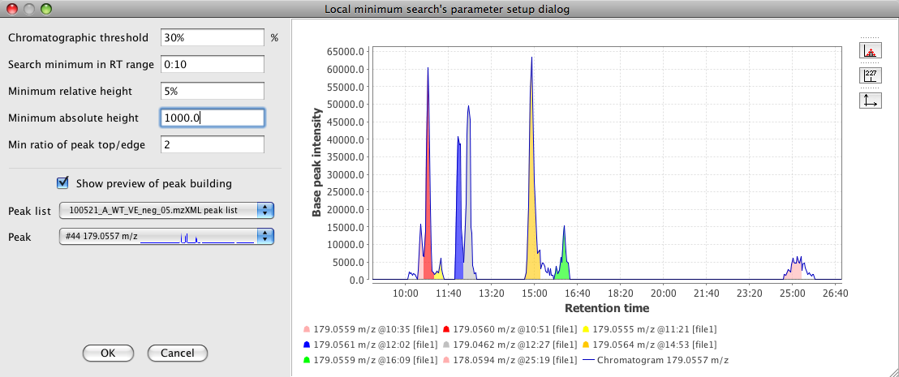

Following the detection of chromatograms by the Chromatogram builder, chromatograms have to be deconvoluted into individual peaks. The Deconvolution module provides several algorithms for this purpose.
This method is very simple and useful to demonstrate the functionality of chromatogram deconvolution. First, the algorithm removes the lowest part of the chromatogram below a baseline level specified by the user. Remaining peaks which span above the baseline level are recognized if they fulfill the minimal requirements of height and length.
This method is suitable for chromatograms with significant background noise of varying intensity. It works in a similar way as the Baseline cut-off method, but it sets the baseline level individually for each chromatogram, depending on the amplitude of signal noise.
The baseline level is calculated as follows:
1. The intensity range of the chromatogram is divided into bins of the user-specified size (the "Noise amplitude" parameter)
2. The bin with the highest number of data points is found. This bin represents the intensity level of the noise signal.
3. Baseline level is set equal to intensity of the bin with the most data points


This method uses the Savitzky-Golay polynomial (A. Savitzky and M. J. E. Golay, Anal. Chem., 36, 1627 (1964)) to get the second smoothed derivative of the chromatogram intensities. The following figure (left) presents the shape of a Gaussian peak (a), the first derivative (b), and the second derivative (c). The figure at right side shows how the signal (blue line) may be divided into individual chromatographic peaks by observing the second derivative.


This method is suitable for chromatograms with little noise and nice peak shapes. It searches for local minima in the chromatogram and separates individual peaks at these minimal points. Individual peaks are recognized if they fulfill the minimal requirements of height and length. The Chromatographic threshold parameter may be used if the chromatogram contains some background noise.
